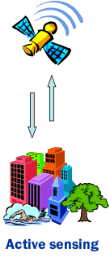
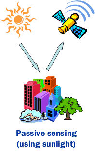
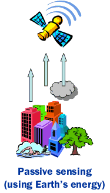

More about satellite images

Satellites carry instruments called sensors. Most satellites have multiple sensors.
One good way of categorizing satellite sensors and satellite remote sensing is by the energy required to collect data.
When an external energy source is required to carry out remote sensing it is called
active remote sensing
. Active remote sensing can be done day and night. The SAR images shown later in the story are all from active remote sensing.
When the sensors rely on the energy coming from natural sources, it is called
passive remote sensing
. The natural source could be the sun. In this type of passive remote sensing the sun's energy is reflected by the Earth's surface. And this kind of remote sensing can be done only during the day.
In other types of passive remote sensing the energy coming out of the Earth's surface is recorded. This type can be carried out at day and night.

© 2006, Geophysical Institute, UAF